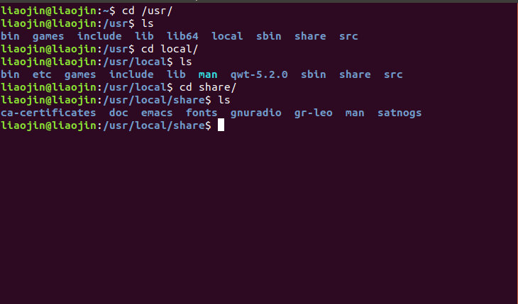
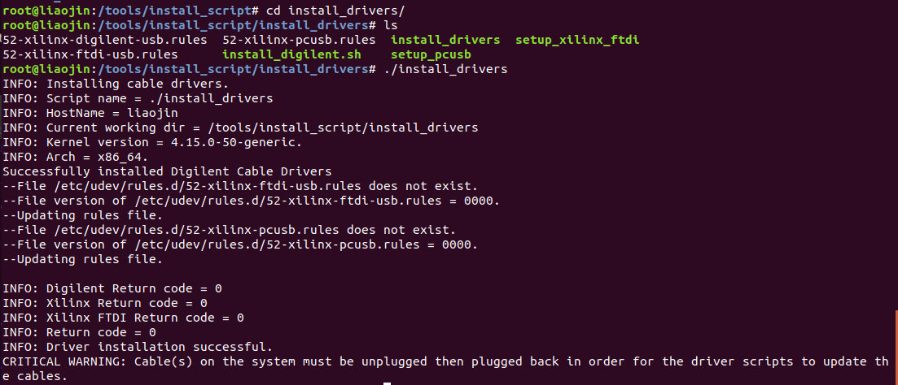

在配完紫丁香卫星地面站的环境后，由于毕设需要，需要安装与GNU Radio版本对应的UHD驱动，当时手残，在给USRP烧录img镜像至60%左右时，按了Ctrl+C终止了这一过程，直接导致USRP和PC无法通过千兆以太网连接，当时心态有点崩，因为这个设备值5万多呢，心想一下被我搞坏了这可咋整，把我卖了也不值这个价啊，想了很多办法，遇到很多坑，最后通过USRP X310预留的JTAG口救活了它。
前言
为方便解决一大堆包依赖的问题，一开始使用GNU Radio的包管理系统Pybombs（Python Build Overlay Managed Bundle System）安装了GNU Radio：
http://www.hackrf.net/2016/06/pybombs-mirror-tuna/
也可参考github上的README：https://github.com/gnuradio/gnuradio （Pybombs or Manual Install）
网速好的话安装过程大约几个小时就搞定，由于Pybombs的recipes（这里我们称它为菜谱，含义如同名字一样，是GNU Radio主要维护的开源包，托管在github下面：gr-recipes），而毕设使用的开源项目gr-leo 不是它主要维护的，因此当手动编译 gr-leo 完成后，会使得 gr-lilacsat、gr-osmosdr等发生冲突，初步分析是由于手动编译后自己更改了GNU Radio的默认blocks搜索路径，导致 gr-leo 、gr-satnogs 等给出的examples中用到的信号处理子模块索引不到，出现missing blocks的错误，虽然后续可以通过更改GNU Radio打开初始化索引block的路径，更改方法如下：
更改gnuradio-prefix下的gnuradio-prefix/etc/gnuradio/conf.d/grc.conf,在local_blocks_path=（本地信号子模块索引路径）加上/usr/local/share/gnuradio/grc/blocks,用pybombs安装gnuradio所有关于gunradio的东西都在你新建的gnuradio-prefix中，当然也不一定是gnuradio-prefix，也可能是其他你新建的文件夹
但这并不是一劳永逸的办法，最好的办法是手动编译安装GNU Radio，虽然麻烦了点，但是不会出这样那样的问题，可能是我对GNU Radio编译安装的框架还不太熟悉，所以当我手动编译ge-leo时，默认编译路径是在/usr/...下的(我的是usr/local/share/)，

所以只能采取笨一点的办法，所有关于gnuradio的开源包均手动编译。
更新：可以在cmake ../的时候预先设置编译路径，这是个好办法，但我还没尝试，用cmake -DCMAKE_INSTALL_PREFIX=/gnuradio-prefix/share ..命令，之前是在编译完后设置的，所以出bug了
但是每次编译都得手动设置编译路径，比较麻烦，所以干脆直接从安装gnuradio到uhd到其他gr开源包，全部手动编译比较省事
遇到的问题
使用的软件无线电平台是usrp x310，采用万兆转千兆适配器通过网线与主机PC相连，若下载HG镜像，使用万兆转千兆适配器通过Port0与主机相连，usrp x310 的默认IP地址为：192.168.10.2，如下图所示
在执行grc文件时出现RuntimeError: AssertionError: Failed to find a valid XML path for RFNoC bloc的错误
然后重新设置了下block路径，点击执行之后报错：FPGA image和uhd驱动不兼容，建议我重新烧录镜像，重新刷镜像时由于手误按了下强行终止（Ctrl+C），导致镜像烧录到一半就停止了，然后终端给我反馈信息说你这样的操作会使usrp处于一种不稳定的状态，然后usrp和PC端就无法进行数据交互了，无法ping通，一开始找了很多办法，换网线，打开USRP外壳想通过reset复位按键让usrp恢复出厂设置，然而打开之后发现里头只有SW1和SW3两个按键，不管三七二十一按着这俩键重启usrp，但是一点效果都没有，依旧ping不通，当时咨询了老师，说按着里头某个按键重启设备可以让他进入安全模式，后来才知道这是usrp N210的操作，它里头靠近射频子板的旁边确实有一个蓝色的复位按钮S2，但是X310直接舍弃了这种复位操作，取而代之的是加入了JTAG口，从而可在FPGA环境下对usrp进行暂时性的刷入固件，掉电后固件会丢失，因为USRP FPGA镜像中包含了网口驱动以及其他驱动，所以这也就是当我终止usrp_x3xx_fpga_burner --addr=192.168.10.2写入镜像命令时为何PC无法和usrp进行通信的原因，由于缺少网口驱动，PC无法通过网线和usrp进行数据交互。
后来还联系了NI上海的技术服务，依旧没有解决，想着五万多的设备就这么被我玩坏了，每天脑子里老是想着怎么去解决这个问题，一直觉得强行终止烧入镜像命令这个误操作根本就不会使硬件烧掉，中期答辩的时候也向熟悉USRP设备的老师确认了肯定没坏，只是变成砖了，需要想另外的办法恢复。后面和大佬讨论试试JTAG，因为既然留给了用户必定是有用的，在google中搜索各种搜索，不过貌似直接搜索usrp x310 jtag就有了解决办法的博客，虽然中间还是遇到了很多问题，但是解决的那一刻还是蛮开心的。
solutions
Ettus官方给出的USRP Hardware Driver and USRP Manual文档链接如下：
http://files.ettus.com/manual/page_usrp_x3x0.html#x3x0_load_fpga_imgs_jtag
如下图所示，里面提到如果不小心下错镜像或者刷入bad image【我提到的不完整镜像（刷到一半终止）也可称之为bad image】，则会让usrp变成砖（”bricking”），但幸运的是，usrp x310提供了USB-JTAG接口使FPGA镜像能暂时性烧录进usrp中，从而加载网口和pcie驱动，使得上电状态时网口和pcie接口可以和主机PC进行通信，但是如果一旦掉电，镜像便随之丢失，因为通过jtag无法将镜像固化到F板载FPGA片上Flash上，所以可以先通过jtag Programmer将镜像临时导入usrp，再通过usrp或者peie将镜像固化到片上flash上。
操作方法如下：
Linux下搭建FPGA调试环境
我安装是Ubuntu18.04 LTS版本，在Vivado2018.3环境下进行JTAG烧录镜像
参考网上博客他们的系统是Ubnutu16.04，因此对应vivado版本不能过高，他们安装的是2017.4版本
我尝试过Vivado2017.4版本，到安装界面时提示我vivado2017.4支持到Ubuntu16.04，因此我就直接退出重新下载2018.3版本了，2018.2版本没有试过，应该也是可以的，毕竟Ubuntu18.04 LTS发布时间也是在2018年
安装过程参考教程：
https://blog.csdn.net/wmyan/article/details/78926324
在xilinx官网下载vivado2018.3的linux版本：
这里我下载了不用license的WebPack免费版，当然也可以下载其他版本，不过需要license，根据需要安装就行（下载bin文件就行，执行之后会类似于visual studio 2017安装一样，在线下载安装包，这个过程需要挺久，尽量保持网络环境良好），关于这几种版本的区别，参考网址：
https://china.xilinx.com/products/design-tools/vivado/vivado-webpack.html
在你下载的bin文件目录下（linux下一般默认下载在
~/Download/文件夹下）打开终端，执行命令：sudo ./Xilinx_Vivado_SDK_Web_2018.3_1207_2324_Lin64.bin自动弹出安装界面，根据需要点击next行，注意一点就是：xilinx套路比较深，在它的官网下载安装包需要注册一个xilinx账号且填写个人信息和用途才能下载，这里的installer一样，需要填写xilinx账号
安装完成后，添加源：
source /tools/Xilinx/Vivado/2018.3/settings64.sh就可以直接在终端中输入
vivado启动了注意：vivado2018.3在linux安装目录和2017.4的默认路径更改了，2017.4的默认安装路径是：
/opt/Xilinx/Vivado/2017.4/...2018.3的默认路径是：
/tools/Xilinx/Vivado/2018.3/...这里也可直接
touch vivado.sh,在里面输入：source /tools/Xilinx/Vivado/2018.3/settings64.shvivado保存OK，在命令行
cd进入vivado.sh文件目录，执行vivado.sh便可打开vivado其他的我就不多说了，基本都是Linux常规操作，不会的google、baidu都行
Use JTAG to load FPGA images
装好vivado环境后，就可以使用JTAG将镜像导入USRP中了
JTAG线使用的USB 2.0 JTAG方口线，平常打印机与电脑的连接线以及STM32 JTAG调试器使用的数据线就是种，没有的话淘宝搜索USB方口线买一根
按照官网教程，在终端执行如图所示三条命令：
cd uhd/fpga-src/ursp3/top/x300
source ./setup.sh
viv_jtag_program /path/to/bitfile.bit
但是写的不够直观，中途还是遇到很多bug，具体操作见下：

不过在执行之前，由于其提到的fpga-src文件夹下有usrp1、usrp2、usrp3等子目录，我查看了一下用pybombs安装gnuradio的目录：gunradio-prefix/src/uhd/fpga-src/,文件夹是空的，可能是用pybombs安装gunradio以及手动编译gr-…等依赖包出了问题，所以手动下载fpga-src，github网址：
https://github.com/EttusResearch/fpga/tree/4bc2c6fc62481452033463ce354ca1ab0343342f
在gunradio-prefix/src/uhd/fpga-src/打开终端(其他目录同理)，命令行输入：
git clone https://github.com/EttusResearch/fpga.git
下载克隆fpga镜像，并将镜像拷贝到.../fpga-src/usrp3/top/x300目录下，然后cd打开该目录，执行添加源命令：
source ./setupenv.sh --vivado-path=/tools/Xilinx/Vivado
当终端反馈信息为：Environment successful initialized，即：vivado环境搭建成功，就可以开始下一步的操作了
注意：由于vivado2017.4版本安装路径默认是：/opt/Xilinx/Vivado
所以添加源的时候记得把vivado路径加入：--vivado_path=/tools/Xilinx/Vivado，不然会报错，如下图所示
最后一步执行命令：
viv_jtag_program /usr/share/uhd/images/usrp_x310_fpga_HG.bit
关于HG、HGS、XG、HA不同镜像的区别，参考Ettus给出的标准硬件文档：
http://files.ettus.com/manual/page_usrp_x3x0.html#x3x0_load_fpga_imgs_jtag
这里也可选择usrp_x300_fpga_HG.bit,因为我使用的是usrpx310，属于x300系列子产品
然而，事事不遂人意，执行第三条命令出现如下图错误：
ERROR: [Labtoolstcl 44-199] No matching targets found on connected servers: localhost
在这个地方卡了快将近一天，一直提示说找不到Xilinx的hw_server，也就是usrp板载FPGA芯片无法通过JTAG和PC进行数据交互，直接ping localhost:3121也无法ping通，试了很多办法，开始以为FPGA芯片坏了，后来才发现是缺少jtag驱动！！！
vivado默认安装后是没有装jtag驱动的，对于ubuntu18.04下的vivado2018.3是这样，我没试过其他版本，也可能是安装过程中需要勾选这一项，但是当时安装vivado的时候并没有看到这项，在win10系统下默认安装了硬件驱动，不然也没法连接硬件
关于如何手动安装jtag驱动，我参考了这篇帖子：
https://blog.csdn.net/sinat_33384994/article/details/70232212
xilinx官方也给出了解决方案：
https://www.xilinx.com/support/answers/54381.html
我试了他给出的常规方法：Full sudo -s access
但具体的目录和相应的命令需要根据实际vivado安装目录更改，因为官方给出的方案应该是较老版本的linux和vivado的，它的vivado默认安装路径为/opt/Xilinx/Vivado/...
其他的方法也可以试一试，应该问题不大
具体步骤
-
先进入root账户，否则没法继续下一步
sudo -s -
进入vivado安装目录下的bin，但是最新版的vivado的bin目录下没有教程中第三步提到的
install_drivers子目录，这个文件夹默认在/tools/Xilinx/Vivado/2018.3/data/xicom/cable_drivers/lin64/install_script/install_drivers下面，如果不是，直接在在安装目录下搜索下这个文件 -
将
install_script/install_drivers目录复制到/tools/目录下cp -i -r install_script /tools/ -
切换到
/tools/install_script/install_drivers目录，执行：./install_drivers最后一步更改linux外部挂载设备（device）的读写权限，这个看情况执行，我的没有执行这一步也可以将驱动安装成功
OK，反馈信息
Dirver Installation successful，JTAG驱动安装完成

继续执行：
viv_jtag_program /usr/share/uhd/images/usrp_x310_fpga_HG.bit
然后反馈Programming DONE，大功告成！
如果之前没有下载安装镜像文件，先sudo uhd_image_downloader一下，再执行上述命令
然后，uhd_find_devices，发现能找到设备，
并且ping 192168.10.2也能ping通，这也说明镜像中确实附带网口驱动，再切换到/usr/lib/uhd/utils/执行usrp_x3xx_fpga_burner --addr=192.168.10.2将镜像固化到flash中(utils/目录根据uhd安装目录实际调整)，重启usrp设备，Game Over！
另外：如果驱动安装不成功的话，检查一下jtag线
命令行lsusb检查下usb-jtag线是否连上，能否传输数据
参考博客：https://blog.csdn.net/qq_34998254/article/details/83302584
Ettus官网UHD Manual链接：
谢谢各位大哥的博客，让我有了救活老师五万多设备的希望，这里建议大家，对于linux系统和usrp的使用，一定要多尝试，特别是像我这种不熟悉linux命令操作的同志，一定要多试，网上给出的那些教程，高低参差不齐，需要择木而栖
- 搜索：google为主，baidu为辅
- 常逛github、gitlab等开源仓库
- 学会英文关键词检索：google+github
- 对于gnuradio这种基于GNU开源协议的软件，多参考Ettus和gnuradio以官网及github上给出的英文文档，会受益匪浅